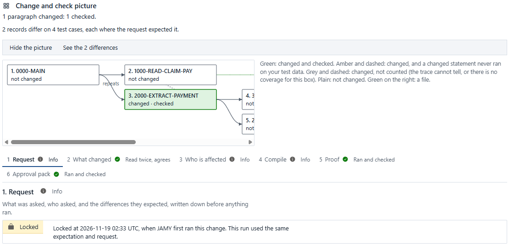

JAMY
JAMYProof for every COBOL change.
JAMY shows the person who approves a code change exactly what it did, and what it didn’t. It runs on a Windows PC, offline, with no AI.
JAMYJAMY shows the person who approves a code change exactly what it did, and what it didn’t. It runs on a Windows PC, offline, with no AI.
Core systems still run on COBOL. Accounts, loans, claims, benefits and tax run on programs written decades ago.
The experts are retiring. Changes are now made by people who didn’t write the code.
Approvers see a ticket, not proof. One wrong line can post money to the wrong account, and nobody notices for weeks.

Understand. A flow chart of the program, showing how often each part ran. Maps how programs, jobs and files connect.
Run. Runs a program or a batch job on the PC. No mainframe needed.
Check a change. Old and new compared byte by byte, then a second person approves.
Clean up. Finds dead code and tidies programs, across a whole set at once.

Offline
No network, no cloud, no account. Your code and data never leave the PC.
No AI
The same change gives the same answer every time, so an auditor can rerun it.
Two people
The person who makes a change and the person who approves it each work in their own part of JAMY.
JAMY is built by Ravinder Singh, a data architect in New York (SQL Server, ETL and reporting for business systems).
JAMY is named after my father and my daughter: JA from his name, MY from hers. I’m the link between them. JAMY is the link between the COBOL an older generation wrote and the people changing it now.